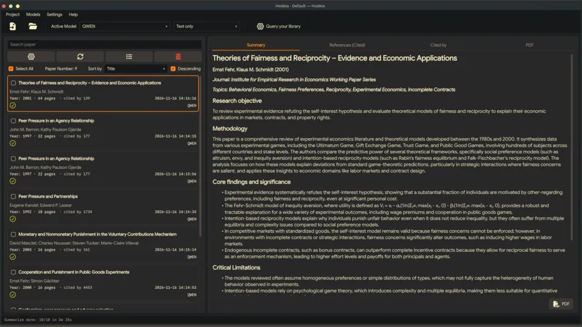
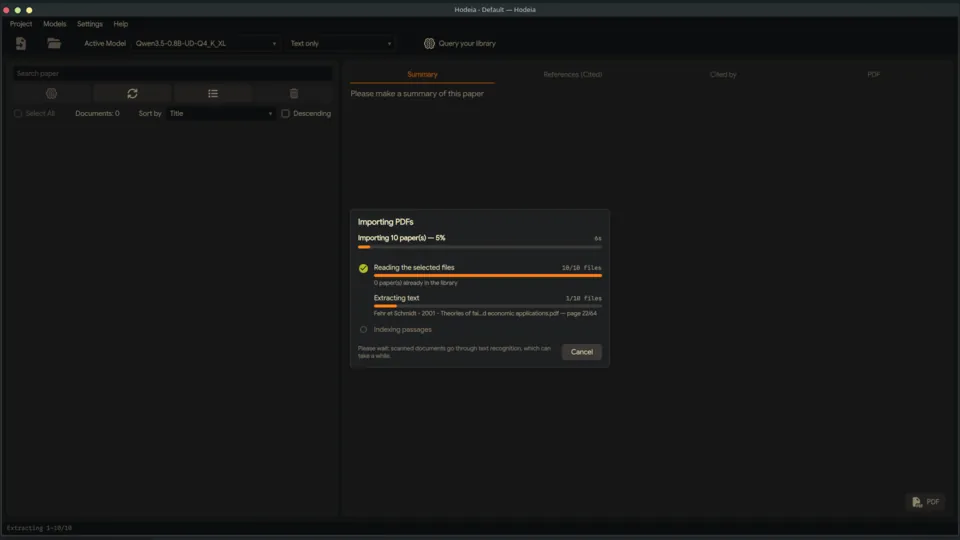
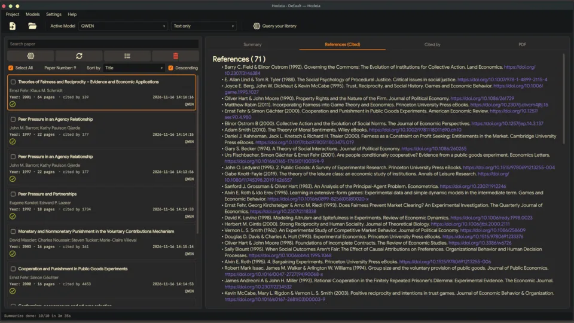

Local AI first
Runs inference locally, directly with llama.cpp, without going through a server. If you have access to an OpenAI-compatible API, you can connect it too.
HodeIA helps you explore your collection of academic papers through single-paper and multi-paper summaries. Import your PDFs, get structured AI-generated summaries, retrieve their references and ask questions across your entire library.


“HodeIA” — from the Ancient Greek ὁδός (hodós), meaning “path.” A tool that guides you through your library.
Runs inference locally, directly with llama.cpp, without going through a server. If you have access to an OpenAI-compatible API, you can connect it too.
Add single files or whole folders. Text is extracted automatically, with OCR fallback for scanned documents.
HodeIA produces structured summaries with information such as the title, the objective, the methodology, the key findings and the limitations of each paper.
Retrieves the works a paper cites and the works that cite it from OpenAlex. The links are clickable, so you can quickly grow your library.
Ask questions in plain language across all your papers and get a synthesized, academic-style answer with inline citations.
HodeIA offers 28 themes (Catppuccin, Dracula, Gruvbox, Nord…) to suit just about every taste.
Export one or more summaries to PDF.
HodeIA lets you work in dedicated workspaces, one per research topic.
Click a screenshot to enlarge it.




With a local model, your papers never leave your computer. No account, no telemetry, no cloud, and above all no limit on the number of papers.
Text extraction, OCR, summaries, search and answers all run locally. Your library is a SQLite database in your own data folder.
To find references, HodeIA sends a paper's title and authors to OpenAlex, never its content.
HodeIA can ingest your whole library: you are not limited to a number of papers. Your only limits are your available storage and your RAM.
Built in C++ on top of Qt, llama.cpp, MuPDF, Tesseract and SQLite. HodeIA uses a software stack that prioritizes performance and a small memory footprint. HodeIA automatically uses the best available hardware, with no configuration.
From your first PDF to your first question in a few minutes. Menu and button names are the ones shown in the English interface.
A Default project is created on first launch, so you can start right away. To separate topics, use Project → New Project..., and switch between them with Project → Open Project.
Click Add a file or Add a folder in the toolbar and select your PDFs. A dialog shows the import progress and lets you cancel. Papers already in the project are skipped, and scanned PDFs go through text recognition (slower).
Select the model in the Active Model list of the toolbar. The list next to it sets how many page images the model sees: Text only (the default), Reduced (figures/tables) or Full (all pages). With a local model, images need its MMProj file. Add more models with Models → Add Local Model... (see Models).
Tick the papers in the list (or Select All), then click the Summarize button above the list. Once a paper is summarized, its references are fetched from OpenAlex.
Click a paper to open it. The tabs show the Summary, the References (Cited), the Cited by list and the PDF pages. Export a summary to PDF from its tab, or tick several papers and use Generate Report from selection.
Click Query your library at the top right. Type your question and press Query: the answer cites the papers it draws from. Past questions are kept in the Query History.
Change the look with Settings → Theme (28 themes, light and dark) and the interface language with Settings → Language. An optional OpenAlex key goes in Settings → OpenAlex API Key....
To use Ollama, LM Studio or another OpenAI-compatible server, add it in Models → Manage Backends... (name, URL, optional API key, then Check Connection), and select it in Models → Backend.
HodeIA ships with a small Qwen3.5-0.8B model so it works right after installation. This model is provided to get started; it is not really recommended. For decent summaries on a modest machine, use the 2B models listed in the table below. Open models can be downloaded in GGUF format from Hugging Face; Unsloth AI is a good provider. Then add the model with Models → Add Local Model... (a GGUF file, plus its optional MMProj file for image support). A few recommendations:
| Model | Size (Q4) | Min VRAM / RAM | Best for |
|---|---|---|---|
| Qwen3.5-2B | ~1.4 GB | ~6 GB | Modest hardware, integrated GPU |
| Gemma4-2B | ~3 GB | ~6 GB | Integrated GPU, better than 0.8B |
| Qwen3.5-4B | ~2.5 GB | ~6 GB | Everyday summaries |
| Gemma4-4B | ~6 GB | ~8 GB | Strong all-round reasoning |
| Qwen3.5-9B | ~5 GB | ~8 GB | High quality, dedicated GPU |
| Gemma4-12B | ~7 GB | ~12 GB | Best quality, 12 GB+ VRAM |
Download the installer (Hodeia-*-x64.exe) and run it.
Build and install the package from the provided PKGBUILD:
git clone https://github.com/hancito/Hodeia.git
cd Hodeia/package/arch
makepkg -siNVIDIA GPU? Vulkan works out of the box; for faster summaries, also install the CUDA backend (needs the cuda package):
cd ../arch-cuda
makepkg -simacOS (Apple Silicon) is not yet available. Want to build from source on another distribution? See the build instructions and the technical documentation.
Not with a local model: everything runs on your machine. Only a paper's title and authors are sent to OpenAlex to find its references. If you configure a remote model server, the paper text is sent to that server — pick one you trust, or host it yourself (Ollama, LM Studio).
Not necessarily, even though your summaries will be faster with a GPU. Thanks to llama.cpp, HodeIA runs on the CPU. On CPU only, stick to the small models (2B to 4B).
The largest one your VRAM (or RAM) can hold — see the Models table. Start with a 2B model and step up as your hardware allows. Q4 is the best size/quality balance; Q5 to Q8 are more accurate if you have memory to spare.
Yes. When a PDF has no text layer, HodeIA runs character recognition (Tesseract). Extraction will be slower, though.
In ~/.local/share/Hodeia/ on Linux and %APPDATA%\Hodeia on Windows: one folder per project, with its database and page images.
Uninstalling HodeIA never deletes it.
No. OpenAlex is free without a key. An optional key (Settings → OpenAlex API Key...) raises the rate limits if you import many papers.
Not yet. The build is prepared for Apple Silicon (Metal) but has not been tested or released.
HodeIA is free software and contributions are welcome.
Open an issue on GitHub with what you did, what you expected and, if possible, the log.
IssuesTranslations are Qt Linguist files in translations/. Improve the French one or start a new language.
C++23 and Qt Quick, with a modular CMake build. The architecture and pipelines are documented in TECHNICAL.md.
Technical docs